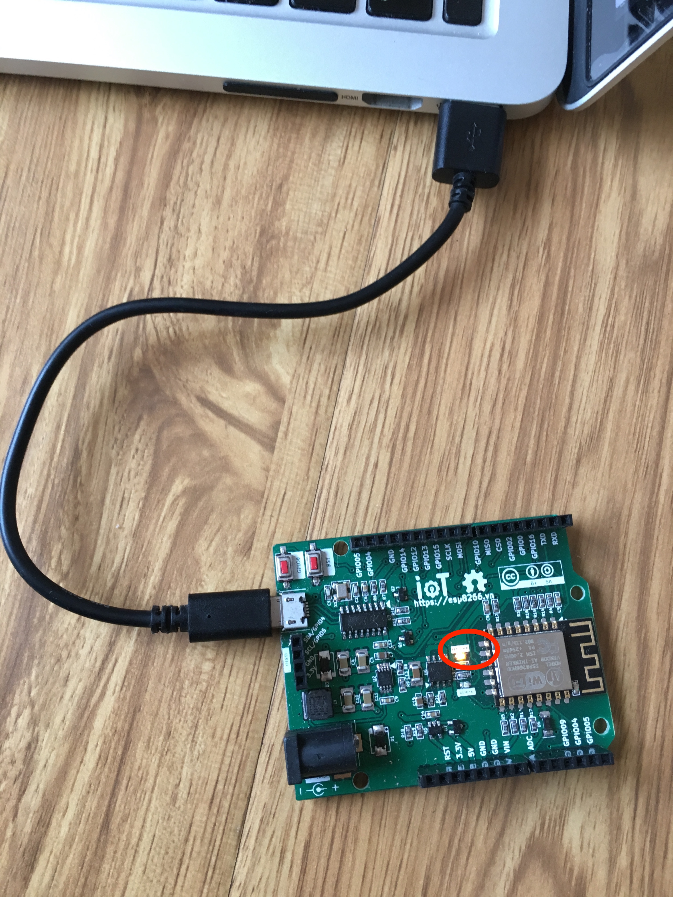

Kết nối phần cứng và cài đặt¶
Kết nối phần cứng¶
Kết nối USB với Board mạch IoT WiFi Uno như hình bên dưới, đảm bảo đèn LED (khoanh tròn) sáng
{kind=link}
Cài đặt USB Driver¶
Tùy thuộc từng hệ điều hành, làm theo các hướng dẫn bên dưới
Windows¶
- Tải bản cài đặt CH341SER_ZIP rồi cài đặt theo hướng dẫn
Mac OS¶
Cài đặt mới¶
Đơn giản chỉ cần tài về vài cài đặt: CH34x_Install_V1.3.pkg
Mac OS Sierra¶
Một số trường hợp đã cài đặt driver phiên bản cũ, tuy nhiên sau khi nâng cấp lên Sierra sẽ bị reset ngay khi cắm USB vào. Để xử lý vấn đề này như sau:
Mở ứng dụng "Terminal"
cmd + space--> Enter TerminalThực hiện command sau để xóa driver:
sudo rm -rf /System/Library/Extensions/usb.kext
Nhập mật khẩu
Với một số máy tính, có thể bạn phải thực thi:
sudo rm -rf /Library/Extensions/usbserial.kext
Nếu không thể thực hiện được lệnh trên, bạn cần phải thay đổi "Security and Privacy" trong phần System Preference. Chọn "Allow Apps Downloaded From" từ "Mac App Store and Identified Developers" sang "Anywhere" - Và tải CH34x_Install_V1.3.pkg về cài đặt lại

Linux¶
Tải và cài đặt bản cài đặt tại CH341PAR_LINUX_ZIP
Cấu hình kết nối¶
Sau khi kết nối và cài đặt xong, sẽ xuất hiện cổng COM ảo trên máy tính (Tùy từng loại hệ điều hành mà có những tên cổng như:
COM1, COM2 ...đối với Windows,/dev/tty.wchusbserial1420trên Mac OS)Mở Arduino IDE và lựa chọn (tham khảo cấu hình kết nối như hình dưới):
- Board:
Generic ESP8266 Module - Flash Size:
4M (3M SPIFFS) - Port: chọn cổng khi gắn thiết bị vào sẽ thấy xuất hiện
- Upload speed: Chọn cao nhất, nếu nạp không được chọn thấp dần
- Board: